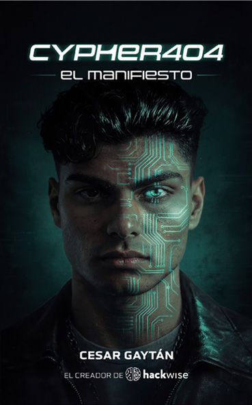

Por qué existe Akbal Pi
Akbal Pi
Akbal Pi fue creado por César Gaytán e inspirado en Akbal, uno de los personajes del libro Cypher404: El Manifiesto.
Comprar / leer el libro →Dos objetivos principales
El primero es llevar una parte del universo de Cypher404 al mundo real. Cypher404 es un proyecto transmedia con distintos puntos de entrada, y Akbal Pi es uno de ellos: una forma de conocer y explorar ese universo no solo a través de la ficción, sino también mediante tecnología real.
El segundo objetivo es experimentar y aprender. Queremos explorar hasta dónde puede llegar una inteligencia artificial local ejecutándose directamente en un dispositivo físico, interactuando con hardware real y combinando Linux, radio, redes, sensores y herramientas de ciberseguridad.
Un laboratorio abierto
Akbal Pi funciona como un laboratorio abierto. El radar WiFi, las auditorías de redes inalámbricas, el wardriving, el análisis de señales, el seguimiento de aeronaves, los sensores y una IA capaz de interactuar mediante voz y texto forman parte de un mismo propósito: entender, construir y experimentar.
Queremos investigar qué ocurre cuando una IA local no se limita a responder preguntas, sino que puede observar su entorno, utilizar herramientas, interpretar información y ejecutar tareas desde un dispositivo físico.
Akbal Pi está pensado para aprender haciendo, compartir conocimiento y experimentar con nuevas ideas.
Si este tipo de exploración te interesa, puedes participar, probarlo, modificarlo y proponer nuevas funciones en el repositorio:
El repositorio es público y Akbal Pi es un proyecto abierto.
Conoce el universo de Cypher404 y compra el libro en cypher404.com/book.